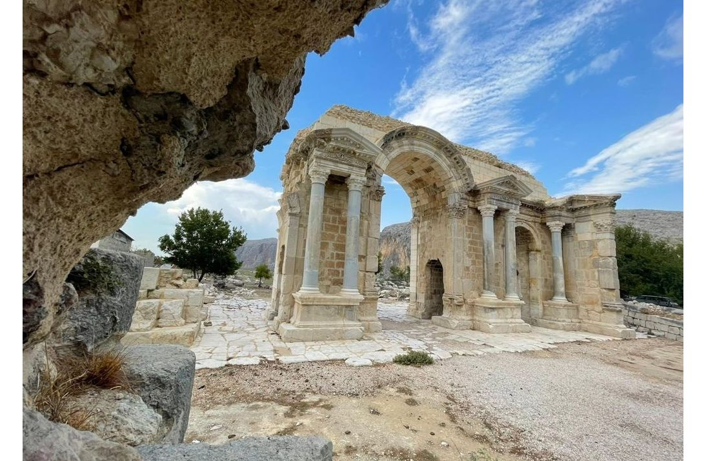

UNESCO Dünya Mirası Geçici Listesi'nde yer alan Anavarza (Anazarbos), Roma İmparatorluğu döneminde Kilikya bölgesinin en büyük metropollerinden biriydi. 34 metre genişliğindeki dünyanın en büyük antik caddelerinden birine ev sahipliği yapan bu devasa antik kent, zafer takları, mozaikleri ve sarp kayalıklar üzerine kurulu yenilmez kalesiyle Adana'nın en büyük tarihi miraslarından biridir.
Kültürel Mirasımız: Çukurova
Efsanelerin, antik kentlerin ve beyaz altının anavatanı Adana'nın mirası.
Yenilmez Şehir: Anavarza Antik Kenti

Topraklarımızda Yaşayan Efsaneler
🐍 Şahmeran ve Yılankale
Adana'nın Ceyhan ilçesinde sarp bir tepeye kurulu olan Yılankale, efsaneye göre yarı insan yarı yılan olan "Şahmeran"ın yaşadığı yerdir. Bu efsane yüzyıllardır Çukurova halkının motiflerine, masallarına ve kültürel dokusuna ilham kaynağı olmuş ölümsüz bir mirastır.
🌿 Lokman Hekim ve Ölümsüzlük Otu
Misis Köprüsü civarında geçtiğine inanılan efsaneye göre, tüm hastalıkların şifasını bilen Lokman Hekim, "ölümsüzlük otunu" bulmuş ancak bu otu Misis Köprüsü'nden geçerken Ceyhan Nehri'ne düşürmüştür. Misis ve Lokman Hekim efsanesi, yörenin en bilindik sözlü kültürel miraslarındandır.